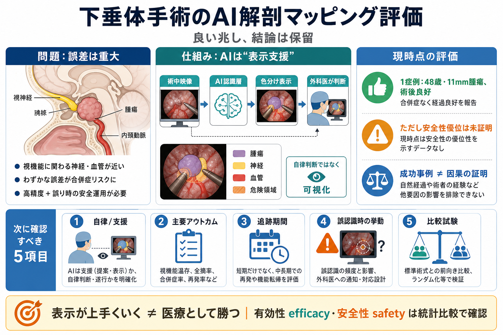

AI Transforms Neuro-Oncology and Neurosurgery in 2025
# Growing Precision: AI Advances in Neuro-Oncology & Surgery. Artificial intelligence (AI) is reshaping neuro-oncology a…

象徴的な一歩
リアルタイム映像に基づき、重要構造を色分け表示して外科医を支援した事例を、安全性と有効性の観点で整理・評価します。
誤差は重大
下垂体周辺は、視機能に関わる神経・血管が近く、わずかな誤差が視力障害、脳卒中、死亡などにつながり得ます。
高い精度（認識の正しさ）と安全性（誤り時の運用）が不可欠。
術野理解を補うことで、重要構造の見落としや判断遅れを減らしたい。
AIの役割を切る
AI医療では「AIが判断をしたのか（自律）」と「AIは認識・可視化に留めたのか（ツール）」の区別が安全性評価の前提になります。
AI判断に誤りが混ざると、責任分界や誤作動リスクが大きい。
入力データでは、AIは色分け表示（認識層）に徹し、意思決定と操作は外科医側。
術中の流れ
術中映像をAIが解析し、下垂体周辺の重要解剖を色分けして術野に重ねる「視覚ガイド」を提供したと報じられています。
術中映像（リアルタイム）。
重要構造を認識して“認識層”を生成。
術野上に色分け表示（視覚的注意喚起）。
何が起きた？
ロンドンの国立神経学・脳外科病院で、48歳の患者に対し11mmの下垂体腫瘍の摘出手術が行われ、術後の回復は良好だったとされています。
48歳、下垂体腫瘍 11mm。
研究ツールから臨床試験の初期の患者適用へ。
成功は記録されているが、「安全性の優位性」を統計的に示す証拠には到達していない。
強み
AIが手術の意思決定や操作を奪わず、認識・可視化に留めた可能性が高いことは、医療安全の観点で有利に働きます。
最終責任を人間側が保持しやすい（設計思想）。
“ミリ単位”が重要な下垂体手術で、術野理解の補助が機能し得る。
未確定
1症例の回復は希望材料ですが、標準手術と比べて主要アウトカムが統計的に改善したことは入力情報からは判断できません。
術中に可視化が破綻せず、臨床適用の“初期マイルストーン”になった。
安全性の優位性（低合併症・低有害事象）や転帰改善の因果。
対照群・複数症例で、主要評価項目を事前に定義し、追跡期間まで揃えて比較すること。
検証の手順
安全性優位を言うには、「誤りが起きないこと」だけでなく、「誤りが起きたときに安全に対処できること」と「主要アウトカムの比較」が必要です。
誤認識率、信頼度、遅延（リアルタイム性）。
外科医がどう検証・修正するか（過信を防ぐ手順）。
視機能、神経・血管損傷、合併症、再手術率などの統計比較。
リスク
色分け表示は注意喚起になりますが、AIの誤り（誤認識）や、表示への依存（過信）が同時にリスクになり得ます。
“何を間違えたか”と“どの程度致命的か”の情報が必要。
誤りの検出・エスカレーション・フェイルセーフが重要。
外科医が誤りを見抜ける設計と、表示を“検証材料”として扱うプロトコルが必要。
学習データの示唆
学習に数百の手術動画が使われたという説明は、外科医の経験差を補う可能性を示しますが、データ偏り（施設・機器・画質）は残ります。
多様な例への学習で、個人の経験偏重を緩和し得る。
画質・撮影条件・機器差・患者背景への頑健性（一般化）を確認する必要。
判断基準
報道や資料の続きで、少なくとも次を見つけられるかが「技術の価値」と「安全性の根拠」を左右します。
AIは判断をしたか、それとも表示・認識に留めたか。
視機能、神経・血管損傷、合併症、再手術率など。
術後どの時点まで評価し、効果をどう持続したか。
誤認識が起きたとき、UIと運用はどう安全に導くか。
単群か比較群があるか、標準手術とどう統計比較したか。
複数症例で再現できるか（一般化）。
まとめ
本件はAI医療が研究→臨床試験の段階へ進んだ象徴であり、支援型の設計は筋が良い一方、現時点の情報では安全性優位は未確定です。
認識・可視化に徹し、危険領域の術野理解を助ける方向性。
1症例で転帰改善の因果や安全性優位を断定できない。
誤り時の安全運用、主要アウトカムの統計比較、追跡期間を備えた複数症例での有効性確認。
# Growing Precision: AI Advances in Neuro-Oncology & Surgery. Artificial intelligence (AI) is reshaping neuro-oncology a…
The pituitary gland is located at the base of the brain and controls hormones throughout the body. Pituitary tumors can …
State-of-the-art brain mapping: Valley neurosurgeons use high-tech, 3D brain-mapping systems that guide them to the exac…
A transsphenoidal resection, in which a pituitary tumor is removed through the sinuses and nasal passageway without the …
Title: Brain Tumor Surgery | University of Michigan Health - Brain & Spine Vascular Program (Pediatric). - Functional We…